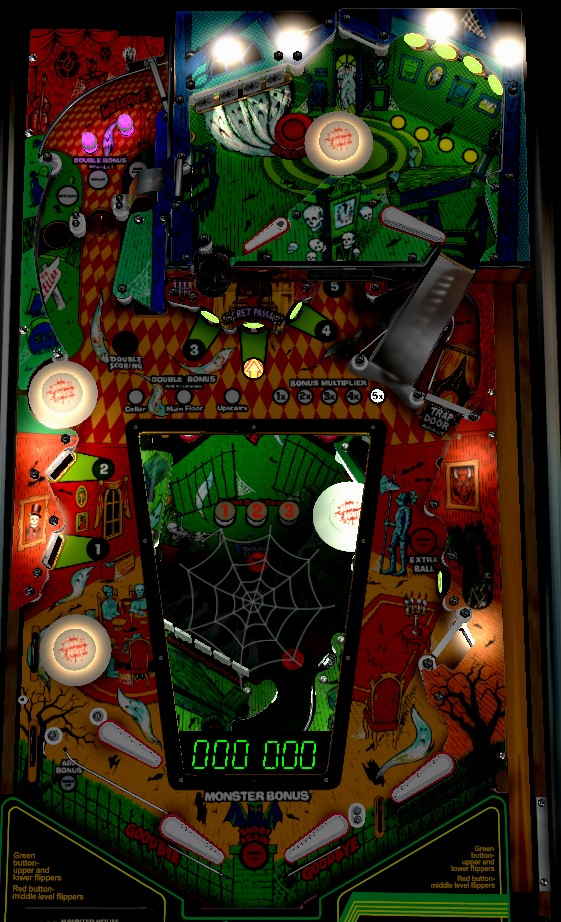

Your turn on Haunted House only ends if you drain on the main playfield, so stay on the upper or lower playfields as much as possible. Use the right ramp or the Secret Passage center "fake" standup target to easily transfer from the main playfield to the upper or lower. Each trip to the upper or lower playfield advances the bonus multiplier. Making enough targets on the upper or lower playfield lights the opposite playfield for double scoring on the next trip, and can also light the saucers in the main playfield's upper left to qualify double advances of the bonus.
Haunted House has 8 flippers; 4 on the main playfield, and 2 on each of the upper and lower playfields. There are two flipper buttons on each side of the game cabinet.
On a physical copy of the game, only the main playfield uses the front flipper buttons, and both other playfields use the back flipper buttons.
In Visual Pinball, the upper playfield flippers are controlled by the alternate flipper buttons, while all other flippers use the main buttons.
In some other virtual recreations such as The Pinball Arcade, all flippers use a single flipper button regardless of playfield.
Which flipper button controls which side is consistent, albeit unintuitive at first. Even though the flippers on the lower playfield are "backwards" in that they shoot toward the player rather than away, the left flipper button operates the flipper that is closest to the left edge of the game for someone standing in front of the game facing the backglass. Similarly, on the upper playfield, the mini-flipper is operated with the left button, and the standard flipper is operated with the right button, owing to their relative positions.
There are 2 ways to access the upper playfield, and 4 ways to access the lower playfield. Draining from the upper or lower playfield always puts the ball on the main playfield. Draining from the main playfield ends your turn. Accessing the upper or lower playfield via any means increments the bonus multiplier toward its maximum of 5x.
To access the lower playfield, do any of the following:
To access the upper playfield, do either of the following:
When accessing the upper playfield, you need to hit at least one upper playfield switch before leaving the playfield in order to earn credit for the trip and increase the bonus multiplier.
Anything in the game that adds to the Bonus shown on the numeric display near the flippers does so by adding a random multiple of 100 points between 0 and 1,000 inclusive. Some features award 2 advances, which refers to a random multiple of 200 points between 0 and 2,000 inclusive. Which features advance bonus is discussed in detail later as relevant. It is also possible to qualify Double Bonus on all three playfields independently, which doubles the value of all bonus advances for the rest of the ball, separately from the game's bonus multiplier.
Any trip to the upper or lower playfields advances the bonus multiplier. Earning Double Bonus on a playfield accelerates how quickly the number on the display near the flipper increases; the number on the display times the bonus multiplier is the actual end of ball bonus that you earn. There is no mid-ball bonus collect, and there is no holdover on the displayed bonus number, the bonus multiplier, or any playfield's Double Bonus activation.
Separately from Double Bonus, which increases how quickly the end of ball base bonus grows, there is also Double Scoring, which can be activated independently for all 3 playfields and affects the direct score value of all switches and targets.
The hole on the left scores 3,000 points, turns off upper playfield double scoring if it is active, and sends the ball to the lower playfield.
Each drop target down scores 3,000 points and a bonus advance. Each completion of the upper playfield drop targets lights one upper playfield standup target, and also lights extra ball at the main playfield right kicker. Completing the upper playfield drop targets 3 times lights the lower playfield center lane for Special and lights the rightmost top hole on the main playfield for Main Playfield Double Bonus. Completing the upper playfield drop targets after the lower playfield drop targets have been completed at least twice on the same ball scores a Special.
Standup targets on the upper playfield score 500 points if not lit or 3,000 when lit. If all 4 targets are lit, hitting any target also awards a bonus advance.
1-2-3-4-5 standup targets score 500 points when not lit, 5,000 points and a bonus advance when lit, or 10,000 points and 2 bonus advances when flashing. Hit a flashing target to light it and cause the next number in the sequence to start flashing. Light all of 1-2-3-4-5 to light the middle top hole of the main playfield for Lower Playfield Double Bonus, light the main playfield right kicker for extra ball, and light the lower playfield center lane for Special.
Hitting the Secret Passage center standup target scores 5,000 points and causes the target to fall away, allowing the ball to drop to the lower playfield.
The mini-loop that goes under the right ramp of the main playfield scores 500 points and a bonus advance. Behind the ramp is the Trap Door, which accesses the lower playfield. To open the Trap Door, shoot the Secret Passage, the unlit right mini-loop, or the rollover switch near the lower left pop bumper.
The main playfield right kicker scores 500 points and a bonus advance. It can also be lit for extra ball by completing any drop target bank in the game or completing the 1-2-3-4-5 sequence on the main playfield. Every switch hit on the main playfield alternates whether or not the extra ball is lit once it has been qualified.
There is no right out lane, just a rollunder switch obscured by plastic. This switch scores 500 points and lights the left out lane.
Both out lanes score 5,000 points. When the left out lane is lit, it also awards a bonus advance. The right out lane cannot be lit and is located between the two main playfield right flippers.
Each drop target down scores 3,000 points and a bonus advance. Completing the lower drop targets once lights the main playfield extra ball and lights the left standup target for a bonus advance in addition to its normal value of 1,000 points. Completing the lower drop targets twice lights the right standup target for a bonus advance, lights the upper playfield drop targets for a Special, lights the left top hole on the middle level for upper playfield double bonus, and lights the main playfield for double scoring for the rest of the ball. That's a lot of lighting, so stay in the lower playfield as much as possible.
The center lane scores 5,000 points and is lit for Special after the upper playfield drop targets are completed 3 times.
The ball cannot be cradled on the left flipper of the lower playfield. Doing so causes it to fall down an out lane that scores 1,000 points.
In competition/novelty play, extra balls and specials score 50,000 points.